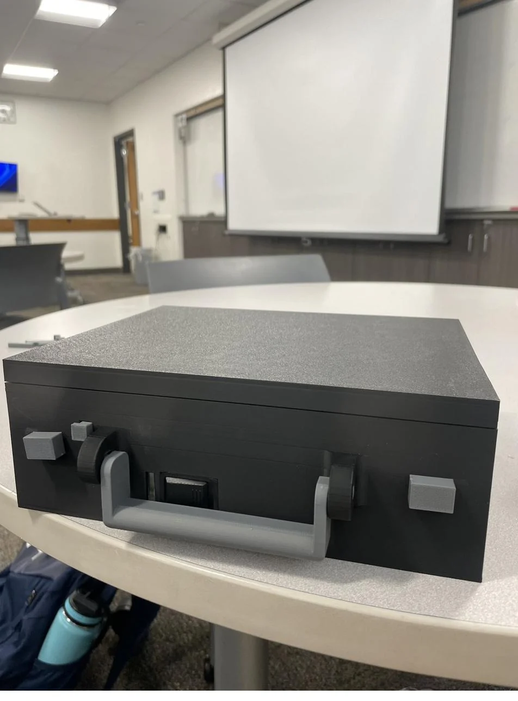
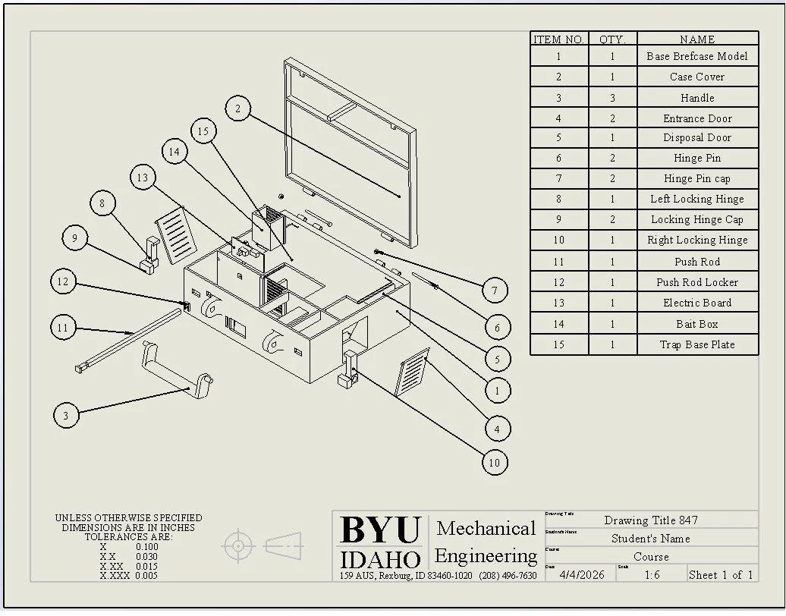
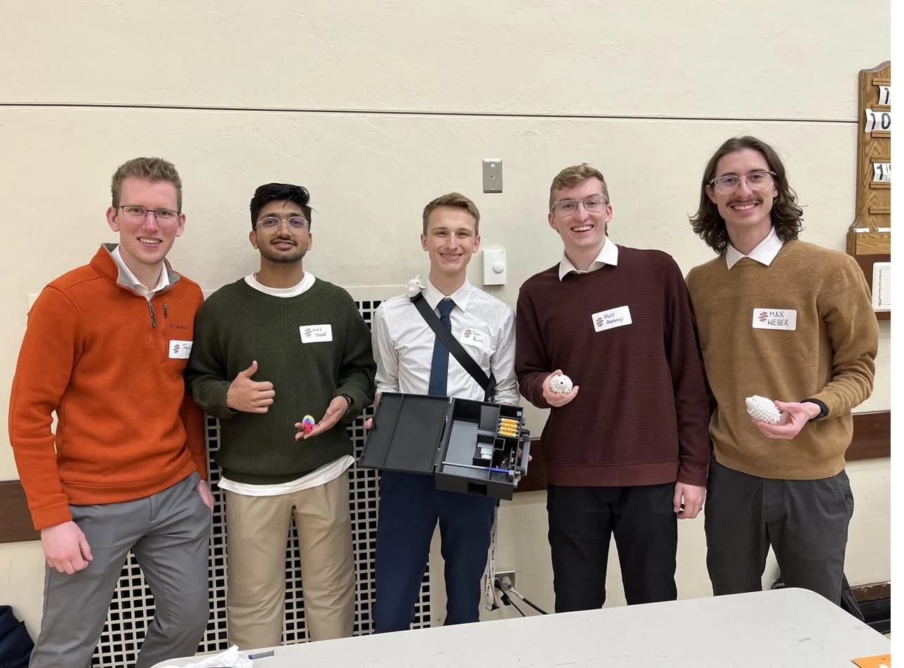

Mechatronics · Team Project
Briefcase Rat Trap
Electromechanical Rodent Trap
A team-built electromechanical trap prototype in a briefcase-style enclosure. I modeled the case and mechanism, researched prior art, and prepared the proposal and bill of materials. We tested the release mechanism; the prototype was not tested on animals.

Key Specs
| Role | Team build — I owned CAD, patent research, BOM, proposal |
| Scope | 15-part assembly, briefcase enclosure 7.5 × 10 × 3 in |
| Process | Pugh matrix concept selection → SolidWorks → 3D print → wired assembly |
| Key spec | $120 against a $200 cap — 40% under budget |
| Trigger concept | Electrified contact plate, single-circuit |
| Interlock design | Lid-activated interlock cuts live power on case-open, restores within 3 s |
| Verification | Static FEA at 14.7 N (3× target load); 80+ release cycles without failure. No animal testing or full-device safety validation. |
| Deliverables | 15-part assembly, BOM, patent search, project proposal |
What we built
Our prototype combines a one-way entrance, an electrical contact plate, a status LED, and a magnetic disposal door operated by a push rod. A detachable base provides cleaning access, and a lid interlock is designed to disconnect power when the case opens.

Design goal
We wanted to reduce handling during disposal and fit the mechanism inside a discreet case. The concept included electrical triggering and a reset sequence.
Packaging and handling
The assembly had to fit inside a 7.5 × 10 × 3-inch enclosure and a $200 budget. We needed space for the entrance, contact plate, release mechanism, and removable base. The lid interlock was designed to cut power when the case opened.
My contribution
I handled CAD modeling of the case and mechanism, background and patent research, the project proposal, and the bill of materials. I also evaluated the disposal-door actuator with static FEA and cycled the mechanism during testing. The enclosure, electronics, and final assembly were a team effort.

Concept selection and build
We compared concepts with a Pugh matrix, modeled a 15-part assembly in SolidWorks, and combined printed components with the electronics. We iterated on the entrance, bait location, cleaning access, and lid interlock. The documented build cost was $120 against the $200 cap.
Testing and lessons
I analyzed the disposal-door actuator at 14.7 N, three times the target load, and completed more than 80 release cycles without failure. That supports the tested mechanism under those conditions. It does not verify electrical effectiveness, animal behavior, or humane operation. The project taught me to define what each test can demonstrate and keep that separate from the intended product behavior.
